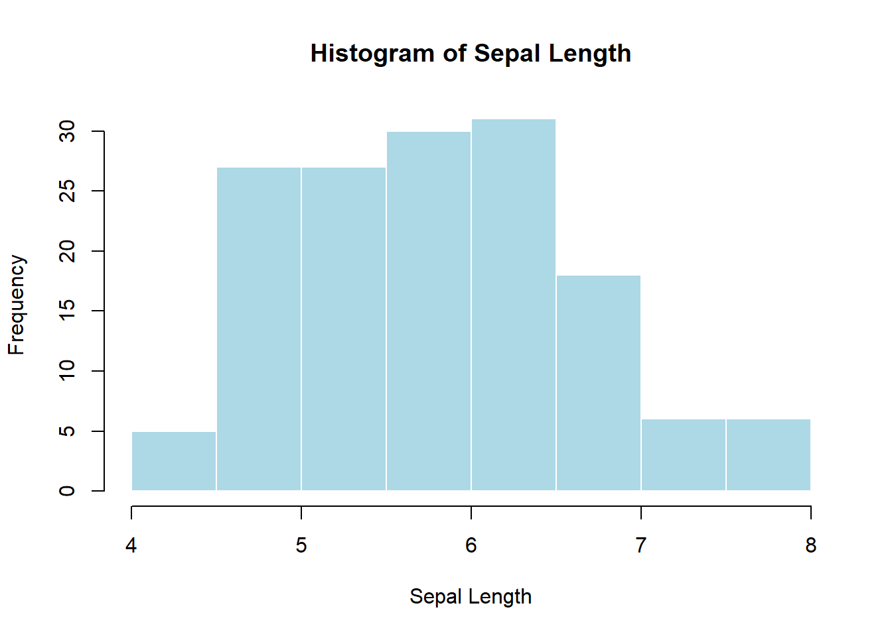
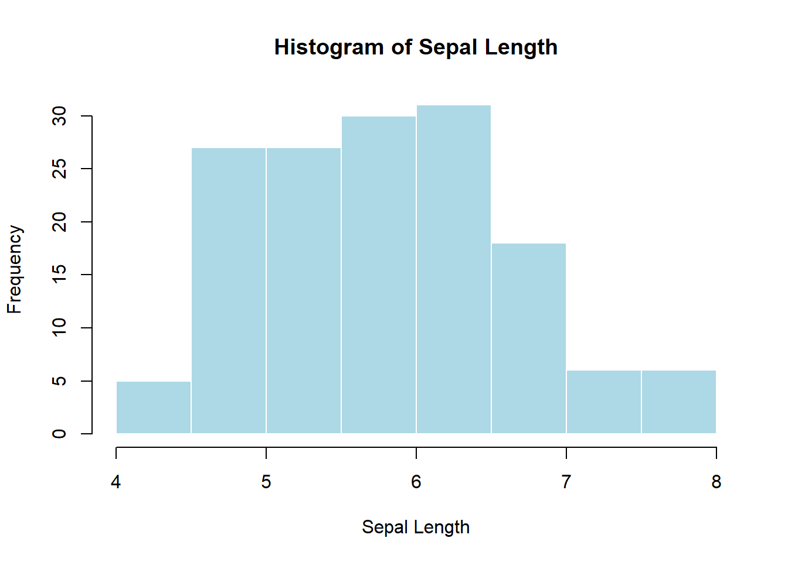
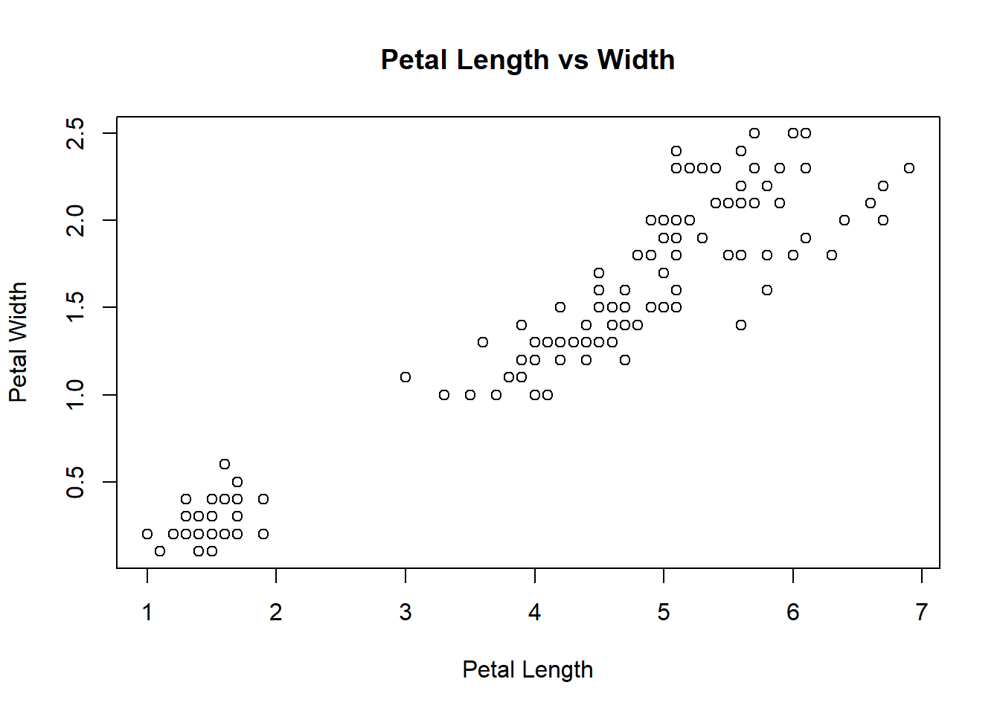

hist(iris$Sepal.Length,
main = "Histogram of Sepal Length",
xlab = "Sepal Length",
col = "lightblue",
border = "white")
Pedagogical note: This module is designed for two audiences at once: - Learners new to statistics (focus on intuition, what to plot, and why) - Learners with statistics background (focus on correctness, assumptions, and best practice)
By the end of this module, learners will be able to:
Visualization helps answer three fundamental questions:
A good visualization: - Matches the data type (categorical vs numeric) - Matches the question being asked - Avoids distortion and unnecessary decoration
Base R plotting is: - Immediate - Explicit - Very useful for quick diagnostics
When to use: - To understand the distribution of a single numeric variable - To check skewness, modality, outliers
hist(iris$Sepal.Length,
main = "Histogram of Sepal Length",
xlab = "Sepal Length",
col = "lightblue",
border = "white")
Statistical meaning: area represents frequency; shape approximates the probability distribution.
When to use: - Comparing counts across categories
counts <- table(iris$Species)
barplot(counts,
main = "Count of Species",
col = "tan")
Do not use bar plots for raw numeric distributions (use histograms instead).
When to use: - Comparing distributions across groups - Identifying outliers
boxplot(Sepal.Length ~ Species,
data = iris,
main = "Sepal Length by Species",
col = "lightgray")
Statistical interpretation: - Median, IQR, and outliers (1.5×IQR rule)
When to use: - Relationship between two numeric variables
plot(iris$Petal.Length, iris$Petal.Width,
main = "Petal Length vs Width",
xlab = "Petal Length",
ylab = "Petal Width")
When to use: - Simple proportion comparisons (few categories)
pie(counts, main = "Species Proportion")
⚠️ Teaching warning: Pie charts make precise comparisons difficult. Prefer bar charts.
Core idea: build plots by mapping data → aesthetics → geometric objects.
library(ggplot2)Warning: package 'ggplot2' was built under R version 4.3.3Structure:
ggplot(data, aes(x, y)) +
geom_*() +
theme_*()ggplot(iris, aes(Sepal.Length)) +
geom_histogram(bins = 20, fill = "steelblue", color = "white") +
theme_minimal()
ggplot(iris, aes(Species)) +
geom_bar(fill = "tan") +
theme_minimal()
ggplot(iris, aes(Species, Sepal.Length)) +
geom_boxplot(fill = "lightgray") +
theme_minimal()
ggplot(iris, aes(Petal.Length, Petal.Width, color = Species)) +
geom_point(size = 3) +
theme_minimal()
ggplot(iris, aes(Petal.Length, Petal.Width)) +
geom_point() +
geom_smooth(method = "lm", se = TRUE) +
theme_minimal()`geom_smooth()` using formula = 'y ~ x'
ggplot(iris, aes(Sepal.Length, fill = Species)) +
geom_density(alpha = 0.5) +
theme_minimal()
ggplot(iris, aes(Sepal.Length)) +
geom_histogram(bins = 20, fill = "steelblue") +
facet_wrap(~Species) +
theme_minimal()
| Question | Variable types | Recommended plot |
|---|---|---|
| Distribution | Numeric | Histogram, Density |
| Compare groups | Numeric + Categorical | Boxplot, Violin |
| Counts | Categorical | Bar plot |
| Proportions | Categorical | Bar (preferred), Pie |
| Relationship | Numeric + Numeric | Scatter plot |
| High-dimensional | Numeric (many) | PCA scatter |
# Sanity checks
stopifnot(is.numeric(iris$Sepal.Length))
stopifnot(length(unique(iris$Species)) == 3)
# Student task ideas:
# 1. Create one plot per question type using iris
# 2. Convert a base plot to ggplot2
# 3. Justify plot choice in one sentence
# - Start with **base R** to build intuition
# - Move to **ggplot2** for flexibility and publication quality
# - Always ask: *What question does this plot answer?*
# - Emphasize interpretation over aesthetics